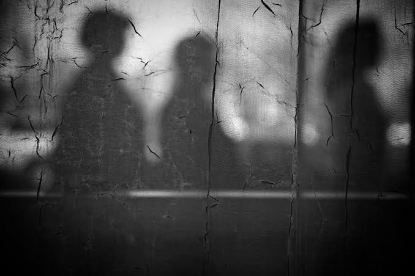

The shadows are all the prisoners have ever seen. They're projections cast by objects passed behind them, lit by a fire they can't see. They mistake these shadows for reality itself, since they have nothing to compare them to. The shadows represent opinion and illusion: secondhand impressions mistaken for truth.
Back to map